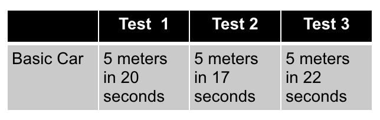
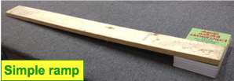
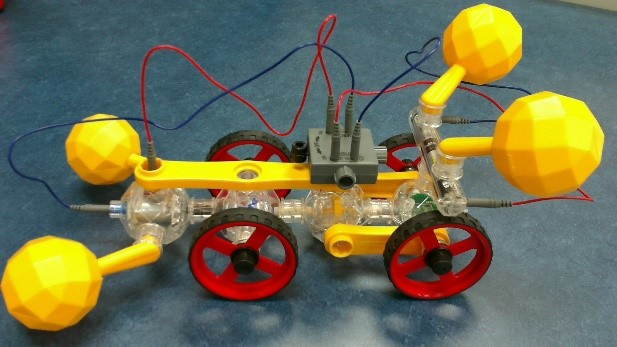
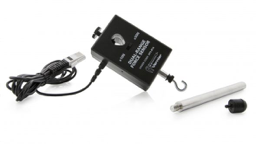
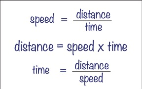
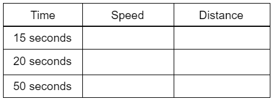

Extend Yourself - IQ Key: Compare Machines
 Perform Another Set of Trials
Perform Another Set of Trials
Select one of the challenges below to perform another set of trials. First, build the basic machine. Then, build a modified machine and compare its performance to the basic model.
Hill Climb Test
What is the steepest ramp that the basic car can climb? (Yellow Buoys - Project #3; Red Buoys - Project #14, or choose from other vehicle options)
- Build a ramp.
- Record the steepness of the ramp. How might you do this?
- Let the car drive up the ramp.
- Record the results. Was it able to climb without stopping?
- Change the ramp angle.
- Repeat your test. At what angle is the car no longer able to climb?
- Save your results to compare with your own car design later on.


Speed Test
How long does it take the basic car to travel five yards or meters? (Yellow Buoys - Project #3; Red Buoys - Project #14, or choose from other vehicle options)
Decide if you are measuring in yards or meters.
- Set up a straight five-meter (or yard) course with both a starting line and a finish line.
- Use a stopwatch to time the car.
- Record your results.
- Repeat steps two and three several times. (Note: Keep the starting point for the car the same for each test. For example, if you start by placing the front wheels on the starting line, do this every time.)
- Save your results to compare with your own car design later on.

More Moving Machines
- Look through the IQ Key construction guide. There are many ideas for machines. Pick one or more to build.
- Use older construction guides to create something. For example, IQ Key Perfect 600 Construction Guide, or IQ Key Perfect 1000 Construction Guide.
- Repeat your tests. Engineers and scientists gather lots of data before they conclude an experiment or test. Collecting more data allows you to make an informed opinion.
- Design and build something completely original.
Vernier Data Collection
Use the Vernier sensors to collect data on your machine.
Measure movement with the motion detector: Repeat the Speed Test.
- Measure the rate at which a car or other automobile moves.
- Can you figure out a way to race two or more cars at the same time and find the speed of all cars?
Measure power with the force sensor: Repeat the Power Lifter Test.
- Measure the pulling power of a truck by hooking it to the force sensor.
- Measure the lifting power of a crane by having it pull on the force sensor.

Distance of a Car
Speed, distance, and time are important quantities to know when dealing with transportation. For example, the speed of a car will affect how long it will take to go a particular distance.

This diagram shows the relationship between distance, speed, and time. To calculate distance, you need to multiply speed and time.
For the IQ Key car, determine the distances your car will travel in different amounts of time:
- First calculate the speed of your car.
- Decide if you are measuring in yards or meters.
- Set up a straight five-meter (or yard) course with both a starting line and a finish line.
- Use a stopwatch to time the car.
- Calculate the speed of the car.
For example: If your car goes 3 meters in 23 seconds, the speed of your car would be speed = distance / time = 3/23 m/s.
- Now to calculate the distance your car will go for different lengths of time (assuming the same speed), you can use the distance equation, which tells you to multiply the speed and time. Remember that you can turn a whole number into a fraction by using 1 as the denominator.
For example: In 23 seconds, the car will travel,
distance = 3/23 m/s × 23 s = 3/23 m/s × 23/1 s = 69/23 m, or 3 meters.
Find the distance that the car will travel for the following times:
